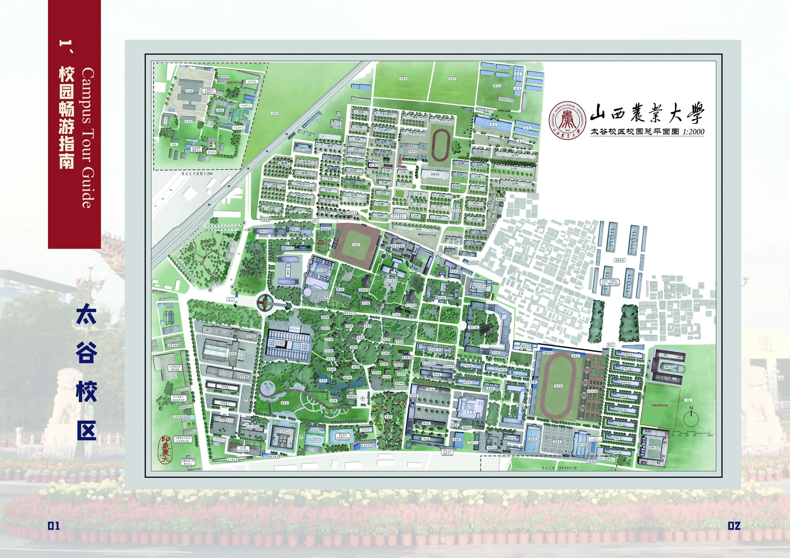

办证件、吃饭、出行、看病、学习，都在这一页。 Registration, food, transport, medical care and study — all on this page.
外国人入住宿舍或租房，必须在 24 小时内 到公安机关办理住宿登记。未办理会被警告，可并处 2000 元以下罚款，并影响后续签证延期和居留许可。 Foreigners staying in a dorm or rented flat must register with the local police within 24 hours. Failure may lead to a warning, a fine up to ¥2000, and problems with your visa extension or residence permit.
银行开户要留本人的实名手机号，所以电话卡必须先办。 The bank requires a phone number registered to you, so the SIM card must come first.
不同网点对材料要求不一样，银行每天能办的外籍开户数量也有限。出发前先在群里问一句，我们会帮你确认能不能办、要不要预约。 Different branches ask for different documents, and banks can only handle a few foreign accounts per day. Ask in the group chat first — we will confirm before you go.
| 中文Chinese | English英文 | 价格Price |
|---|---|---|
| 牛肉面牛 | Beef noodles | ¥10 |
| 鸡蛋灌饼素 | Egg pancake | ¥5 |
| 羊肉串羊 | Lamb skewers | ¥3/串 |
| 扬州炒饭素 | Fried rice | ¥8 |
| 红烧肉猪肉 | Braised pork — no pork! | ¥12 |
绿标＝清真可用；红标＝含猪肉，穆斯林同学请避开。 Green = halal-friendly; red = contains pork, please avoid.
| 中文 | English | 能吃吗OK? |
|---|---|---|
| 牛肉 | Beef | ✅ |
| 羊肉 | Lamb / Mutton | ✅ |
| 鸡肉 | Chicken | ✅ |
| 猪肉 | Pork | ❌ |
| 海鲜 / 虾 | Seafood / Shrimp | ⚠️ |
| 内脏 | Offal / Intestines | ⚠️ |

点地图上的数字或下面的清单，看这个地方是干什么的。 Tap a number on the map or in the list below.
底图与坐标来自本校《校园导游图系统》课设的高清地图与文字标签，每个点位都已对照原图核对过；共 200 个地点，可用上方搜索。外事处已按「南院15号楼」补上。留学生公寓楼号、保卫处、校门位置待确认，正式版建议实地走一遍校准。 Base map and coordinates are taken from the campus-tour-guide course project; every pin was checked against the original map labels (200 places, use the search box above). The International Office has been added at South Court Building 15. The international dorm, security office and gate positions still need confirming.
每晚 20:00–22:00 群里有人在线答疑；其余时间有急事直接打上面的值班电话。 A volunteer is online in the group chat from 20:00 to 22:00 daily. Outside those hours, call the duty phone for urgent matters.